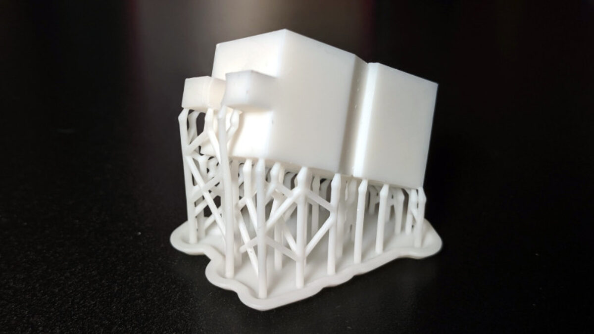

Le relevé
Mesures, contraintes, efforts subis. Tout part d'un croquis coté.
ATELIER OUVERT · IMPRESSION 3D · PETG
La pièce qui n'existe plus, je la redessine et je l'imprime.
On vous a passé l'adresse ? Bienvenue à l'atelier. — JdF

Mesures, contraintes, efforts subis. Tout part d'un croquis coté.

Modélisation, tolérances, validation à l'écran.

PETG sur BambuLab X1C. Ajustée, résistante. Fichier remis si vous voulez.